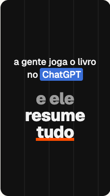
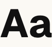
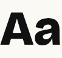
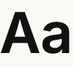
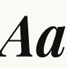

Referência
Original da câmeraComo a S5IIX grava: plano e acinzentado.


GeistTítulos e legendas dos Reels; o painel.
Bricolage GrotesqueCartão do CTA e o PDF da palavra.
InterTexto editorial dos cartões.
Playfair DisplayA palavra em itálico da capa.Quando a equipe criar um estilo novo, ele aparece nesta lista.
| Onde | GB | % do total |
|---|---|---|
| Gravações da câmera | 117,05 | 94,6% |
| Material e cenas extras | 6,73 | 5,4% |
@korvu_oficial · sincronizado em 25 out, 22:25 · o painel só lê os arquivos do projeto
Maquete · Biblioteca · fora da tela
Daqui para baixo não é a tela: é o que o engenheiro-frontend implementa quando o bloco não tem dado, está carregando ou falhou, e as vistas que só aparecem ao tocar. Regras: biblioteca.md e design-system.md.
Quando houver um look em 00-marca/cor/luts/, ele aparece aqui com a sua foto.
Quando houver uma capa publicada ou na fila, o estilo dela aparece aqui.
Quando houver uma ficha de legenda em 00-marca/referencias/legendas/, ela aparece aqui.
As famílias usadas nos Reels e no painel aparecem aqui.
Quando um vídeo tiver o brief de uma animação, ela aparece aqui.
Quando o sincronizador somar as gravações e o material, o espaço aparece aqui.
Quando o Claude Code rodar neste projeto, a fatia de cada modelo aparece aqui.
Quando o Claude Code rodar neste projeto, cada modelo aparece aqui com a fatia dos tokens e o que faz.
As peças do estúdio aparecem aqui quando o painel/biblioteca.yaml listar as ferramentas.
Quando a equipe criar um estilo novo, ele aparece nesta lista.